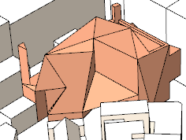

Skalat måttband
- Mät modell med avseende på vald skala.
Användning
- Skriv in en skala, t.ex. 1:100.
- Klicka startpunkt för mätning.
- Klicka slutpunkt för mätning
Specialtangenter
- Shift = Lås nuvarande inferens.
- Piltangenter = Lås till axel.
Extension Warehouse